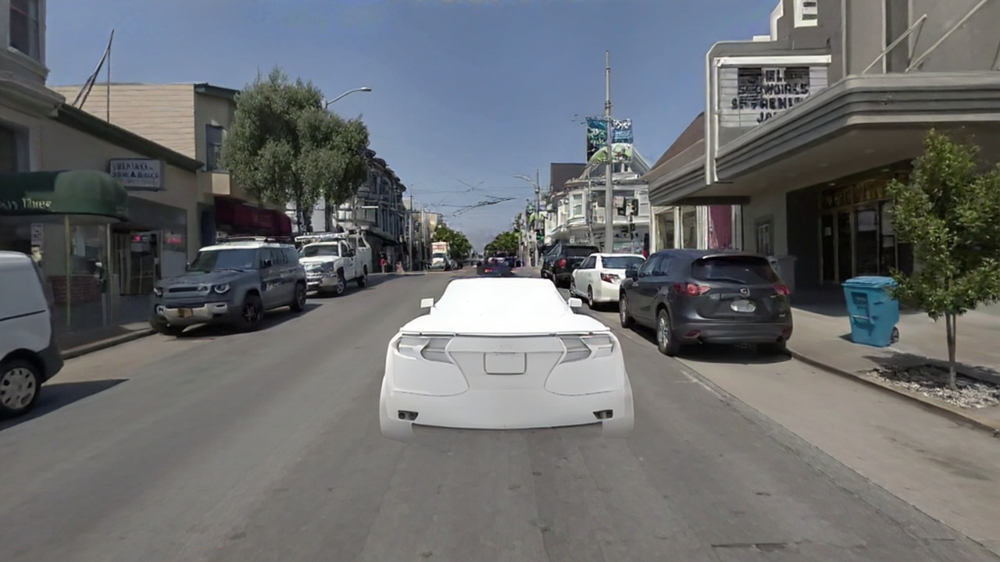
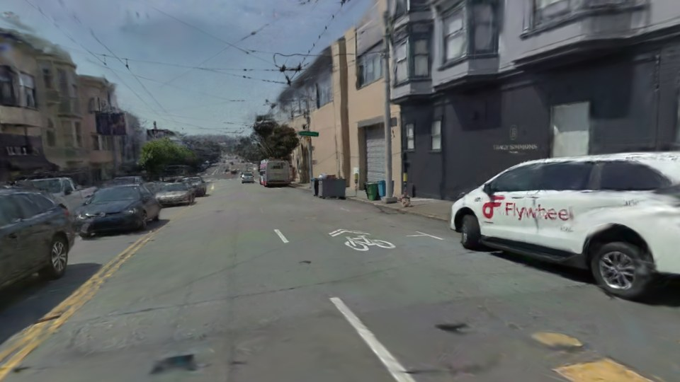
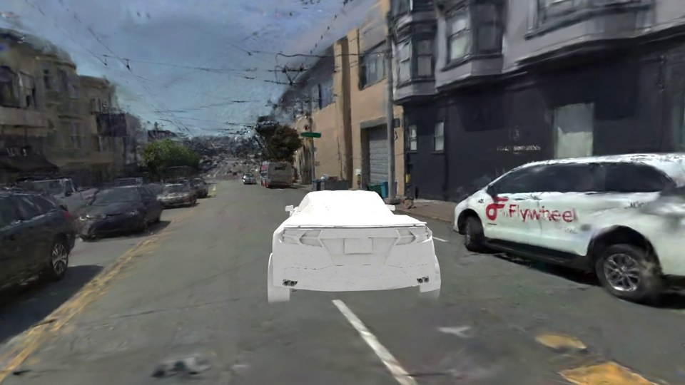
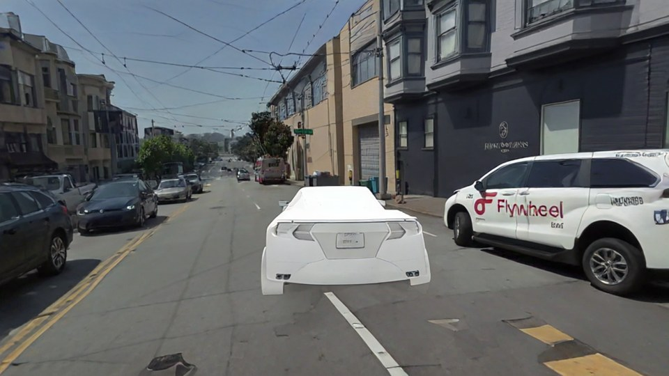

알파마요 058 사진 5대 + LiDAR
전부 free 3DGS, SH 3
학습 중 Difix 24회 : 경로 밖 가상 시점을 고쳐 다시 학습에 넣음
맵 학습 1.76 h
Genesis 차량이 달리며 카메라 포즈를 줌
맵을 그 포즈에서 렌더
충돌 mesh, SDK 차량과 같이 돎
렌더 프레임당 20.6 ms (1280×720, RTX 4090)
현재 구도의 맵 렌더를 Difix에 넣어 보정 (참조 : 가장 가까운 실제 사진)
1 step, 1024×576
프레임당 + 76 ms (논문, A100)
| 실제 사진 (GT) | Difix3D 고정 맵 | 고정 맵 + Difix3D+ | |
|---|---|---|---|
| 맵 준비 | 촬영 | 맵 학습 1.76 h (한 번) | 맵 학습 1.76 h (한 번) |
| 프레임당 | 렌더 약 21 ms | 렌더 약 21 ms + 76 ms | |
| 형상 | 고정 (맵) | 고정 (맵) + 2D 보정 | |
| 달리는 차 | 있음 | 없음 (지움) | 기준 사진에서 가림 → 대부분 사라짐 |
고정 맵만으로 형상과 배치는 고정, 먼 건물과 나무는 번짐
Difix3D+로 노면 글자, 창문, 하늘 경계가 사진에 가까워짐
기준 사진의 달리는 차를 가려서 맵에 없는 차가 생기지 않음. 맵의 흐린 잔상은 일부 남음
우리 대응 : Difix3D 고정 맵에서 카메라를 옮겨 렌더, 필요하면 Difix3D+로 보정
차 뒤 추종 시점 → 위로 → 오른쪽으로 100° 회전 → 위에서 내려다봄 (주행 중)
추종 시점까지는 맵 유지
옆으로 돌면 바닥 덩어리, 번짐 (본 적 없는 각도)
Difix3D+ : 하늘, 노면 정리. 깨진 형상은 남음
자차는 Genesis 차량 mesh로 같이 렌더
① 맵을 차 카메라 포즈에서 렌더
② 알파마요 모델이 화면을 보고 궤적과 CoT를 냄
③ 그 궤적으로 차가 움직임 → 다음 프레임 ①
위 : 시간, 속도, 진행 거리, 내비 입력
오른쪽 : 회전 안내, 신호 상태, 계획 궤적
아래 : CoT (모델의 추론 문장)
| Tesla Reality View | Difix3D 고정 맵 | 고정 맵 + Difix3D+ | STORM (다음 단계) | |
|---|---|---|---|---|
| 장면 준비 | 없음 | 맵 학습 1.76 h | 맵 학습 1.76 h | 160 ms / 2초 구간 |
| 프레임당 | 약 28 ms (36 fps) | 렌더 약 21 ms | 렌더 약 21 ms + 76 ms | 렌더 약 21 ms |
| 지연 | 약 1 s (추정) | 없음 | 프레임당 + 76 ms | 없음 |
| 명시적 맵 | 없음 (추정) | 있음 | 있음 | 있음 |
| 현재 품질 | 비공개 | PSNR 22.55 | 사진에 가까움 | 17.8 (학습 전), fine-tune 진행 중 |
| 지금 (학습 없음) | 값 |
|---|---|
| PSNR | 17.8 (3DGS 맵 22.55) |
| 거리 | 1.6~2배 멂 |
| 구간 | 2초마다 끊김 |
| 카메라 | 앞 3대로 학습됨 |
1 Waymo 가중치 사방 시험 (완료)
2 알파마요 사방 5대 fine-tune (진행 중)
3 nuScenes fine-tune
4 섞어서 학습 → 강건성 비교
| Tesla Reality View | 지금 (Difix3D 맵 + Difix3D+) | 다음 (STORM + 보정) | |
|---|---|---|---|
| 명시적 맵 | 없음 (추정) | 있음 | 있음 |
| 장면 준비 | 필요 없음 | 1.76 h | 160 ms / 2초 구간 |
| 화면 보정 | 생성 자체 (36 fps) | + 76 ms / 프레임 (논문) | 같은 과제 |
| 폐루프 시뮬레이션 | World Simulator (별도) | 됨 (알파마요 CoT) | fine-tune 후 시험 |
| 현재 품질 | 비공개 | PSNR 22.55 | 17.8 (fine-tune 전) |